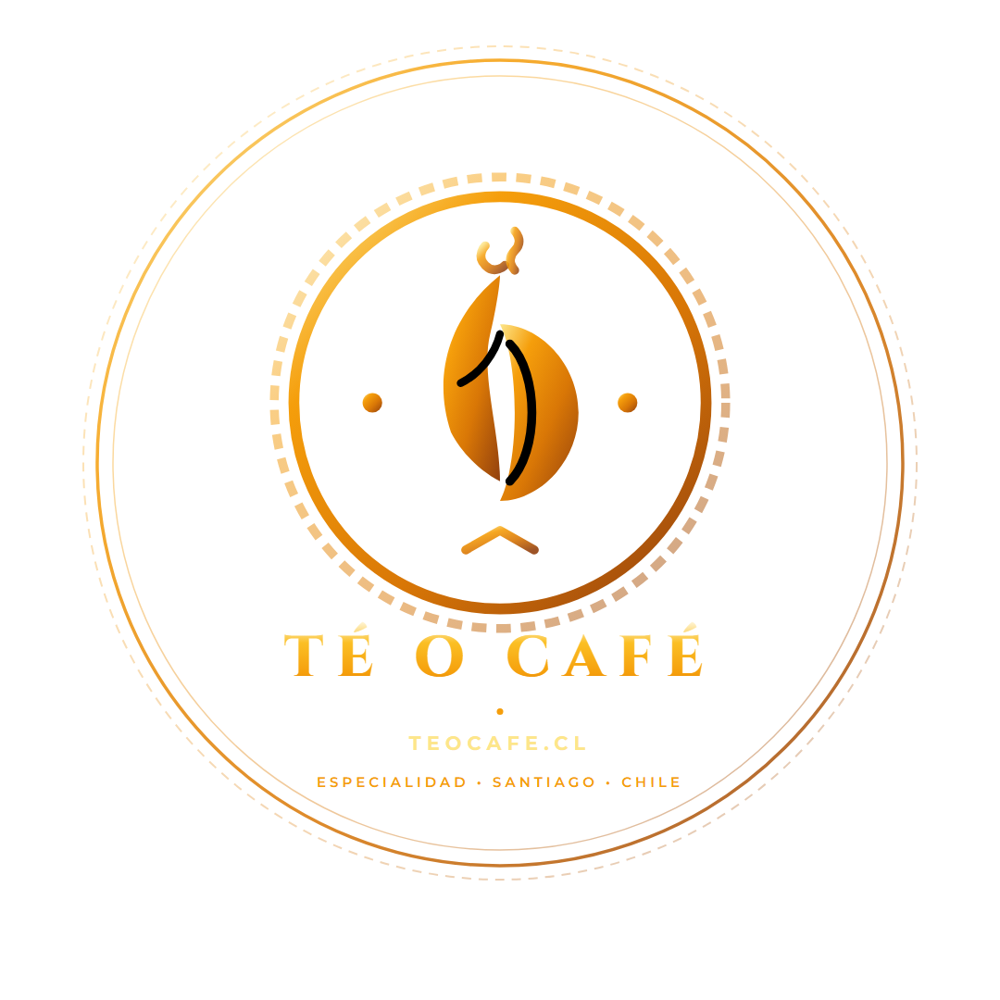
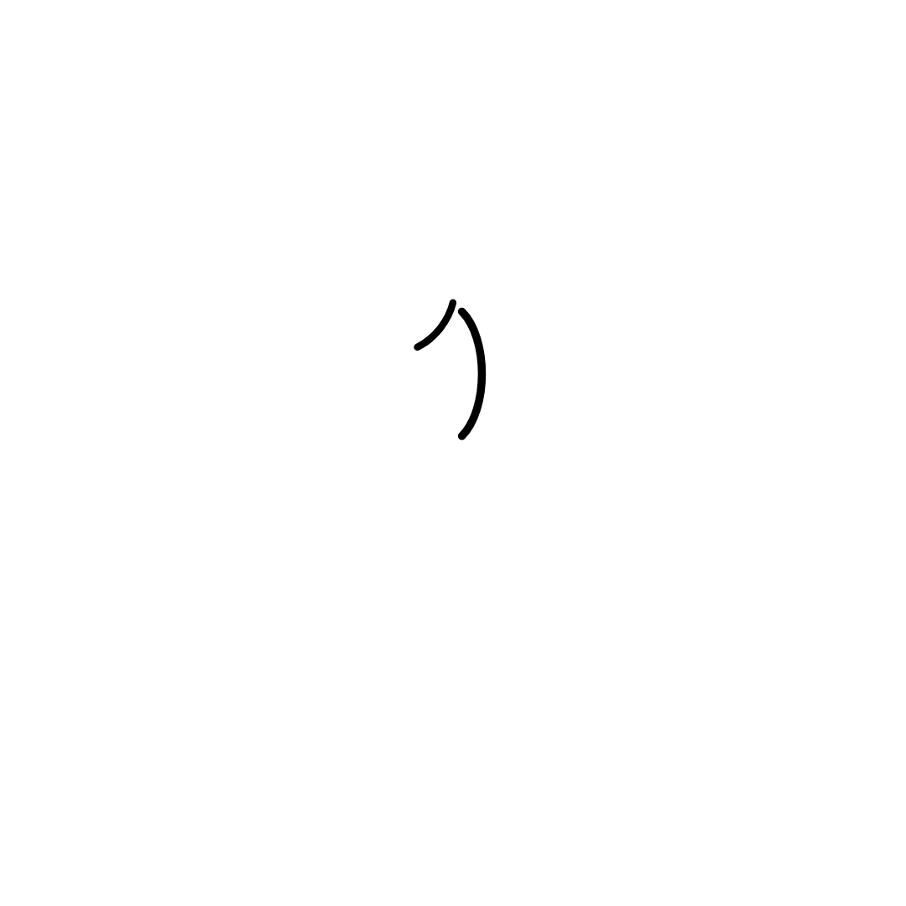
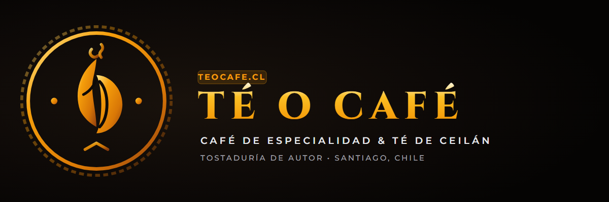

Avatar Oficial (@teocafe.cl)
Centrado perfecto dentro del área segura circular de Instagram. Fondo negro noche con emblema en oro degradado.


Logo Circular Dorado
Emblema y textos dorados sin fondo. Diseñado para estampar como marca de agua en fotos de café, reels y videos.



Logo Blanco Puro
Versión en blanco 100% puro para aplicar sobre fondos fotográficos oscuros, empaques, boletas o stickers.



Logo Horizontal Completo
Emblema + tipografía "Té o Café" + "teocafe.cl • Café de Especialidad & Té de Ceilán". Ideal para banners web, firmas de correo y membretes.



Creativa de Lanzamiento Oficial
Afiche publicitario listo para publicar en el feed: presenta los pilares de la tostaduría, las 103 variedades Basilur y el llamado a la web.

Guía de Configuración para ValerIA & Instagram
Copia y pega estos datos directamente en la cuenta de Instagram de la tostaduría.
🇨🇱 Santiago • Tueste fresco semanal
🍃 103 Variedades de Té Basilur Ceylon
🏆 Café Oficial de Colo-Colo Centenario
🚚 Despacho a todo Chile en 24-48 hrs
👇 Catálogo & Tienda Online:
teocafe.cl
Enlace en bio: https://teocafe.cl (o el enlace activo de GitHub Pages temporal mientras se vincula el DNS).
• Títulos: Cinzel (Google Fonts)
• Subtítulos y párrafos: Montserrat (Google Fonts)